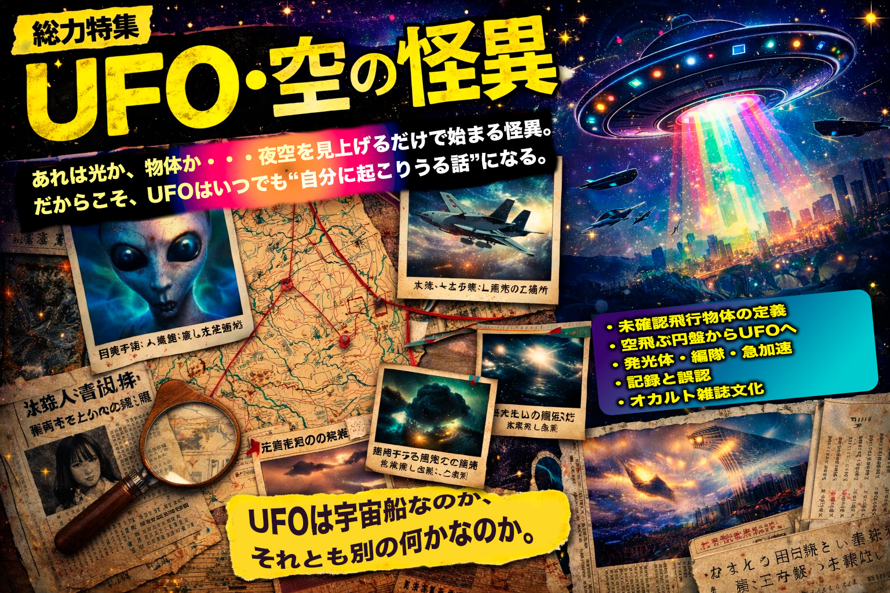
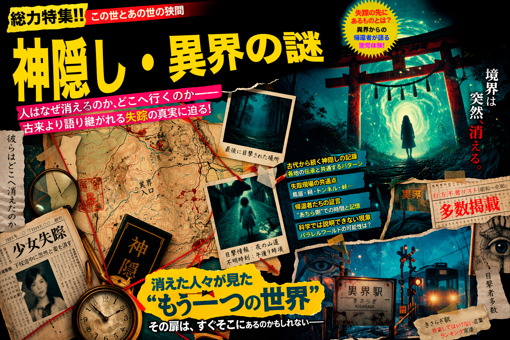

UFO、神隠し、
学校の怪談。
怪しい話を、
面白く読む。
オカルト、都市伝説、神隠し、異界、UFO、心霊——暗く重い資料庫ではなく、ワクワクしながら読み漁れる総合ポータルとしてまとめた架空の特集サイトです。

今月の巻頭特集
消えた者たちの記録
神隠し、存在改変、帰ってきても元に戻らない失踪譚をまとめた看板特集。
人気特集
まずは押したくなる大特集から。雑誌の表紙をめくる感覚で読める入口にする。
このサイトのノリ
怖がらせるだけじゃなく、怪しい話を"面白く読む"雑誌サイトっぽさを出す。
オカルトは、重く暗いだけだと入口が狭い。
少しポップに、少し胡散臭く、でも中身はちゃんと不気味。
それくらいが一番読みたくなる。
少しポップに、少し胡散臭く、でも中身はちゃんと不気味。
それくらいが一番読みたくなる。
Magazine Style
デザイン方針
雑誌の特集感、ポップな差し色、明るい紙面風カードで、他の暗い怪異サイトとキャラを分ける。
ポップな差し色
雑誌っぽい見出し
読みやすい本文
軽い入口
いま気になる話題
深掘り前提のデータベースではなく、"次に何を読みたくなるか"が見える並びにする。
TOPIC-01
神隠し・存在改変
人が消えるだけでなく、周囲の記憶や記録からも薄れていく。かなり強いフックになるテーマ。
TOPIC-02
学校の怪談
定番なのに強い。場所別、時間別、噂の型別に整理すると特集が作りやすい。
TOPIC-03
UFO・発光体
恐怖一辺倒ではなく、ロマンや不思議さも混ぜられるため、総合サイトに向いている。
TOPIC-04
録音異常・心霊写真
視覚と音の両方に展開できるので、記事だけでなく演出や企画にもつながりやすい。
おすすめの入口
トップからそのまま個別特集へ飛ばせる構造にして、軽く回遊できるポータルにする。
Popular Tags
注目ワード
神隠し都市伝説
異界UFO
心霊学校怪談